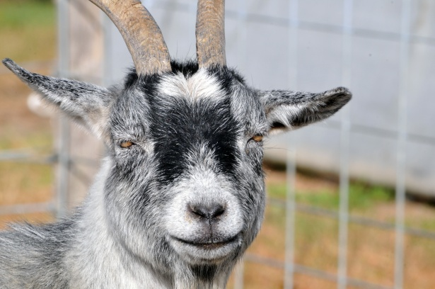
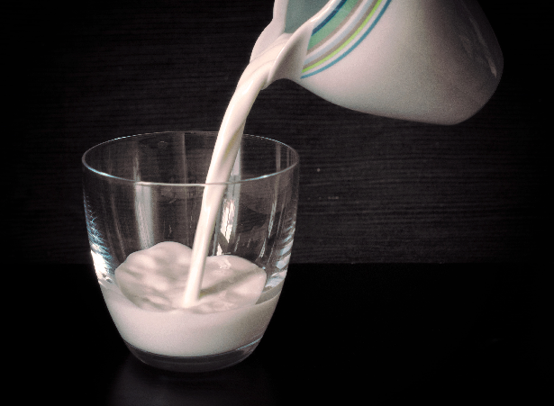

Goats are friends! And they make delicious nutritious milk.

Goats have been used to produce milk for thousands of years. Their size, character, eating habits and usfulness make them one of the ultimate family animals.
From the day they are born the are bouncy fun loving creatures that have an unending curiosity about everything.
Because of their very social personalities they can become a part of the family! They will follow you everywhere you go if they can.
Goats are friends! And they make delicious nutritious milk.

Goats produce milk that is creamier and many find easier to digest then the milk from cows. Certainly better for you then the dairy products we buy at the grocery store. Many people also enjoy other goat dairy products like goat cheese. Goat cheese typicaly has a sharper tast then cheese made from cows milk that some poeple love and others do not. Goat yogurt and Kefer also have a following and are not as sharp flavored as the cheese. If you get the chance try it out! Quality fresh goats milk is a real treat both to the palate and to your body.